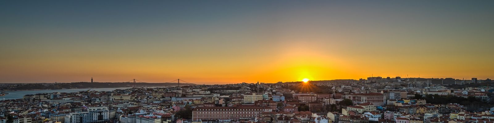
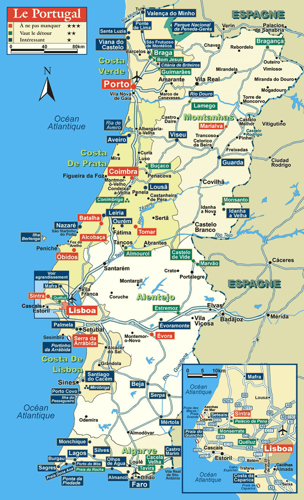

Lisbon is one of the oldest cities in the world, and the oldest in Western Europe, predating other modern European capitals such as London, Paris and Rome by centuries. Julius Caesar made it a municipium called Felicitas Julia, adding to the name Olissipo. Ruled by a series of Germanic tribes from the 5th century, it was captured by the Moors in the 8th century. In 1147, the Crusaders under Afonso Henriques reconquered the city and since then it has been a major political, economic and cultural centre of Portugal. Unlike most capital cities, Lisbon's status as the capital of Portugal has never been granted or confirmed officially – by statute or in written form. Its position as the capital has formed through constitutional convention, making its position as de facto capital a part of the Constitution of Portugal.
Flag of Lisbon
Lisbon has experienced a renaissance in recent years, with a contemporary culture that is alive and thriving and making its mark in today's Europe. Perched on the edge of the Atlantic Ocean, Lisbon is one of the rare Western European cities that faces the ocean and uses water as an element that defines the city. Lisbon enchants travelers with its white-bleached limestone buildings, intimate alleyways, and an easy-going charm that makes it a popular year-round destination.
Situated in the extreme south-west of Europe, just a few hours from any of the other European capitals,Lisbon enjoys a Mediterranean climate. It has the warmest winters of any metropolis in Europe, with average temperatures 15 °C (59 °F) during the day and 8 °C (46 °F) at night from December to February. The typical summer season lasts about six months, from May to October, although also in April temperatures sometimes reach around 25 °C (77.0 °F).
This is a country that has the oldest borders in Europe, with an exceptional range of different landscapes just a short distance away, lots of leisure activities and a unique cultural heritage, where tradition and modernity blend together in perfect harmony. Its superb cuisine, fine wines and hospitable people make this a tourist paradise of the highest quality.

Map of Lisbon
| Country | Portugal |
| District | Lisbon |
| Municipality | Lisbon |
| River | Tagus River |
| Coordinates | 38°42′50″N 9°8′22″W |
| Highest point | Serra de Monsanto-227 m |
| Lowest point | Atlantic Ocean-0.0m |
| Population | 545,245 (2011) |
| Area | 39sqmi |
| Timezone | UTC+1 |